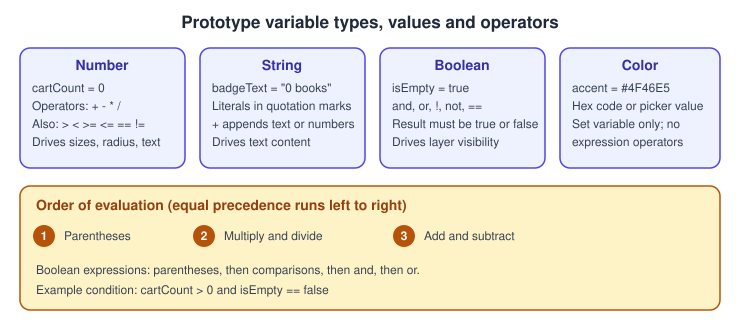
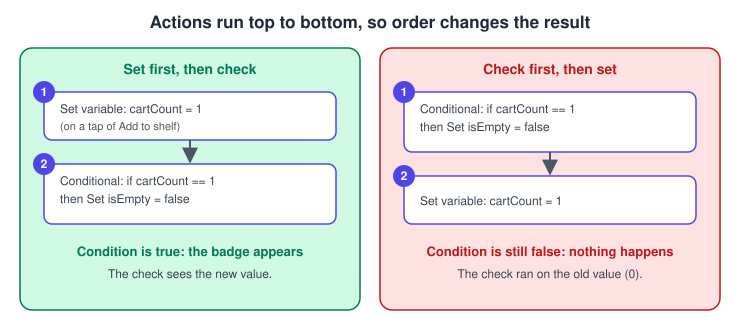
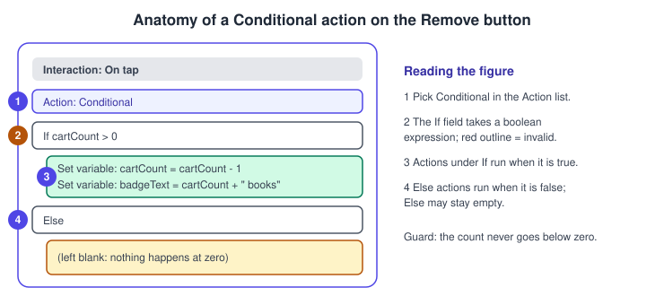
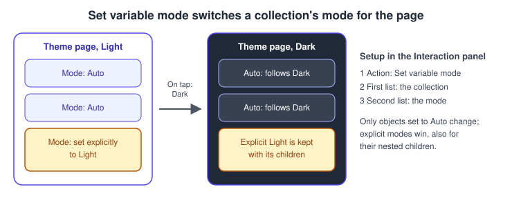
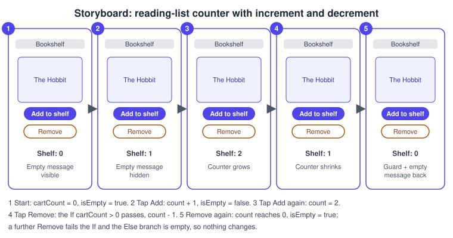

Advanced Prototyping with Variables
|
This content was generated with the assistance of AI and should be verified against the official documentation before being relied on in production. |
This page was written on 2026-10-30 against the UI3 interface of Figma Design. A basic prototype only moves between frames; with variables it can also remember values (how many books are on the shelf), react to them (hide an empty message) and make decisions (never go below zero). The Figma help centre states that setting variables from prototype actions, multiple actions per trigger, conditionals and expressions are available on the Professional, Education, Organization, Government and Enterprise plans, and that building them needs edit access to the file, in practice a Full seat. People with "can view" or "can view prototypes only" access can play the result. The Starter plan is therefore not enough for this page; see Plans, Seats and AI Credits. The article on multiple actions and conditionals describes the features as generally available on any paid plan, so confirm the plan before relying on a feature. Source: Figma Learn: Use variables in prototypes
The running example is a reading list in Bookshelf: tapping Add to shelf increases a counter, tapping Remove decreases it without going below zero, and an "empty" message appears whenever the counter is zero. The page builds on Prototyping Basics (triggers and actions), Variables, Collections and Modes (creating variables) and Interactive Components and Microinteractions (the Change to action).
Concepts
-
A prototype variable is an ordinary Figma variable (String, Number, Boolean or Color) that a prototype can change while it plays. Variables are created as described in the variables page; this page covers changing them.
-
Set variable is an action: choose the variable in the Target list and give it a new value. The value must match the variable type: a number or number variable for a Number, a quoted text literal or string variable for a String,
true,falseor a boolean variable for a Boolean, and a hex code or colour-picker selection for a Color. -
Set variable mode is an action that changes which mode of a collection applies, for example Light to Dark, while the prototype plays.
-
Multiple actions means one trigger can run any number of actions; the help centre says there is no limit.
-
Conditional is an action that evaluates a boolean expression in its If field and runs one set of actions when it is true and another set (the Else, which may be empty) when it is false.
-
An expression is a calculation or comparison typed in the Set variable value field or in the Conditional If field.
-
State management is the habit of keeping the prototype’s state in a few well-named variables, such as
cartCountandisEmpty, and binding layers to them instead of drawing one frame per state.

Where it lives in UI3
Select a layer, open the Prototype tab at the top of the right sidebar and click the plus next to Interactions. The Interaction details modal holds the trigger (for example On click / On tap) and the Action list, which contains Set variable, Set variable mode and Conditional among the other actions. Layers are bound to variables in the right sidebar: the visibility icon in the Layer section (right-click it and choose a boolean variable) and the text properties (Assign variable). To test, use the Play button or the presentation view described in Presenting and Testing Prototypes. The documentation lists no dedicated keyboard shortcuts for these actions; the Actions menu (Command K on macOS, Ctrl K on Windows) can still find commands by name.
Expressions
Expressions can be typed in the "Set variable to" field when the target is a Number, String or Boolean variable, and in the Conditional If field. You can type directly or use the suggestions in the selection panel to insert variables and operators; press Enter or Return to finish. An invalid expression is outlined in red, so a red outline is the cue to check syntax.
| Kind | Allowed values | Operators |
|---|---|---|
Numerical |
Number variables and number literals |
|
String |
String literals in quotation marks, number literals, string and number variables |
|
Boolean |
|
|
A boolean expression must resolve to true or false; numerical and string operators can feed a boolean expression but cannot produce a boolean on their own. Negation uses ! or not in front of the value, and negative numbers use a minus sign. For arithmetic, parentheses are evaluated first, then multiplication and division, then addition and subtraction. For booleans, parentheses come first, then comparisons, then and, then or. Operations of equal precedence run left to right. Examples taken from the help article, adapted to Bookshelf: set badgeText to "Shelf: " + cartCount, or test cartCount > 0 and isEmpty == false.
Multiple actions and their order
Click Add action in the interaction to add another action to the same trigger. Actions run from top to bottom, so order matters: setting cartCount to 1 and then checking cartCount == 1 succeeds, while reversing the two steps checks the old value first and does nothing. To reorder, drag an action by the area to its left; you can also drag an action into a Conditional. The chevron next to an action name collapses or expands its details. Animations attached to the same trigger run one after another.

Conditionals
To add a conditional, create an interaction, choose a trigger, and pick Conditional from the Action list. Write a boolean expression in the If field, choose one or more actions that run when it is true, and choose actions for Else that run when it is false (Else can stay empty). The help article describes a single if/else pair; it does not describe an "else if" chain, and it does not say whether conditionals can be nested, so build such logic by stacking separate Conditional actions in order and test the result. Invalid conditions are outlined in red.

Set variable mode
The Set variable mode action changes the mode of a variable collection for the current page. Create the interaction, choose Set variable mode, pick the collection in the first list and the mode in the second. It affects only objects whose mode is Auto; a mode set explicitly on an object is kept for that object and its nested children. It is how a prototype toggles Light and Dark while it plays, using the collection built in the variables page.

State of the reading list
Before wiring anything, sketch the states. The reading list has two meaningful states, empty and with books, and every tap is a transition between them. The counter itself can grow without limit while the list stays in the "with books" state.
Procedure: build the reading-list counter
Prerequisites: a Bookshelf frame with a book card, a button named Add to shelf, a button named Remove, a text layer for the count and a text layer reading "Your shelf is empty".
-
Open the Variables tab in the left navigation bar, create a collection named
Prototype stateand add a Number variablecartCountwith the value0, a Boolean variableisEmptywith the valuetrueand a String variablebadgeTextwith the value"Shelf: 0". -
Select the count text layer, and in the Text section of the right sidebar use Assign variable to bind its content to
badgeText. -
Select the "Your shelf is empty" layer, right-click the visibility icon in the Layer section and choose
isEmpty, so the message shows only whileisEmptyis true. -
Select the Add to shelf button, open the Prototype tab and add an interaction with the trigger On click / On tap.
-
Choose Set variable, target
cartCount, and enter the expressioncartCount + 1. -
Click Add action, choose Set variable, target
isEmptyand enterfalse. -
Click Add action once more, choose Set variable, target
badgeTextand enter"Shelf: " + cartCount. Because actions run top to bottom, the text already uses the incremented count. -
Select the Remove button and add an On click / On tap interaction with the action Conditional.
-
In the If field enter
cartCount > 0. Under the true branch add Set variablecartCounttocartCount - 1. -
Still in the true branch, add Set variable
badgeTextto"Shelf: " + cartCount. Leave Else empty. -
Below the first Conditional, in the same interaction, add a second Conditional with If
cartCount == 0and, under the true branch, Set variableisEmptytotrue. -
Click Play, tap Add to shelf twice and Remove three times, and confirm the label returns to "Shelf: 0", the empty message reappears and a fourth tap on Remove changes nothing.

The help centre’s own click counter follows the same pattern: a Set variable action clickCount + 1 followed by a Conditional on clickCount == 5, then a boolean bound to the visibility of a message. Source: Figma Learn: Advanced prototyping examples
Procedure: switch Bookshelf to dark mode while playing
-
Make sure the
Themecollection from the variables page has Light and Dark modes and the frame’s mode is Auto. -
Select a Dark mode toggle in the prototype and add an interaction with the trigger On click / On tap.
-
Choose the action Set variable mode, pick the
Themecollection in the first list andDarkin the second. -
Add a second interaction on a Light toggle that sets the mode back to
Light. -
Click Play and tap the toggles; Auto objects switch, while any object you set explicitly keeps its mode.
Components and variables
Variables can also be changed by the Change to action in an interactive component, and applying a variable to a variant property changes the instance’s variant, while applying it to a component property updates the instances. A Bookshelf heart or "Add to shelf" button can therefore be one interactive component whose states increment a shared counter. Source: Figma Learn: Use variables in prototypes
Pitfalls
-
Putting a Conditional before the Set variable it depends on, so it tests the old value.
-
A type mismatch: assigning a quoted string to a Number variable, or forgetting the quotation marks around a string literal.
-
Forgetting a guard such as
cartCount > 0, so Remove produces negative counts. -
A condition outlined in red: the expression uses an unsupported operator or syntax.
-
Expecting Set variable mode to override objects with an explicit mode.
-
Building one frame per state instead of binding layers to variables, which multiplies the frames to maintain.
-
Assuming values persist between plays: the help pages consulted do not state whether variable values reset when a prototype restarts, so confirm this in Play before demonstrating.
Where older guides are outdated
Guides written before variables became generally available on 2024-04-16 build counters and carts by duplicating frames and linking them, because prototypes could not store values. Recent books do cover variables and conditionals, but show the previous interface; click paths must be read against UI3, the only interface since 2025-04-30, and "editor" and "viewer" seats have been Full, Dev, Collab and View seats since 2025-03-11. Source: Figma release notes